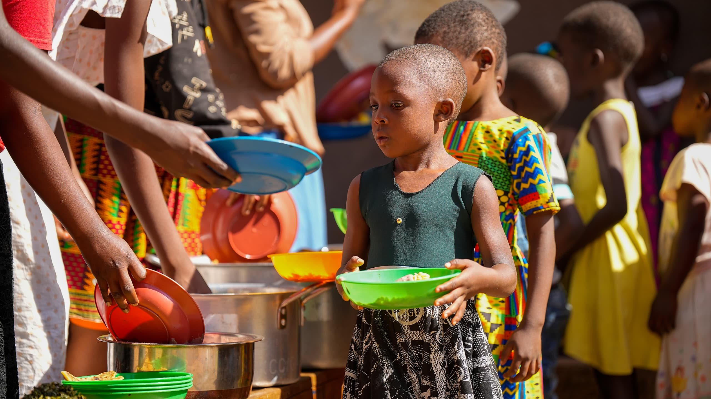
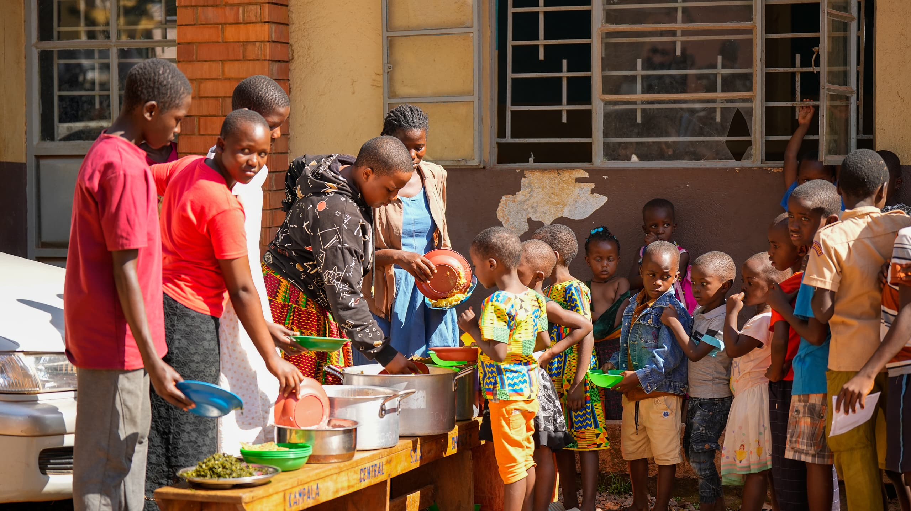
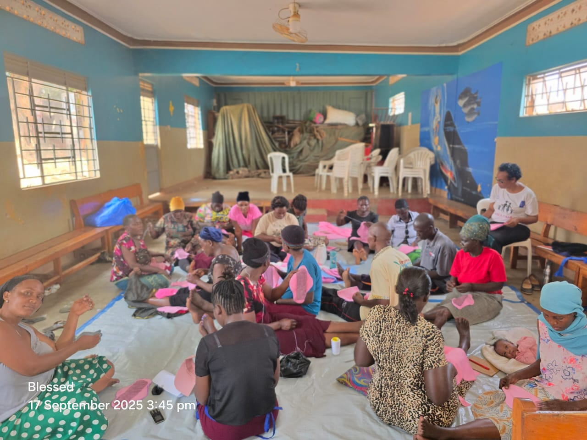
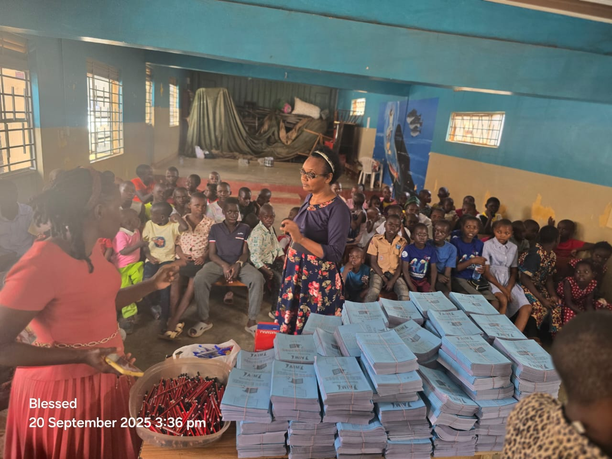

Weekly hot meals.
After devine service, children from the the community come together for a warm meal provided for at church. For most, sadly, this is the proper meal of the week.
See the feeding days
We're a ministry of Kampala Central Seventh-day Adventist Church on Gadaffi Road, working with families from the neighbouring Makerere–Kivulu slum.
Impact Fund began as a small group of members from Kampala Central SDA Church wanting to help the families living right next door in Kivulu. Today we run feeding days, school support, Sabbath children's chapel, health camps, and a mothers' workshop — all from the church compound on Gadaffi Road.

After devine service, children from the the community come together for a warm meal provided for at church. For most, sadly, this is the proper meal of the week.
See the feeding days
Several times a year we host a workshop for the mothers in our circle — making reusable sanitary pads, basic tailoring, and parenting conversations. They go home with a skill they can use, and a small care package of household supplies.
Meet the mothers
Each new term, we sit with families to work out which children most need help and what's missing — fees, a uniform, a set of exercise books. We pay it directly to the school where we can, and run a small homework club in the church hall on weekday afternoons.
How we teach